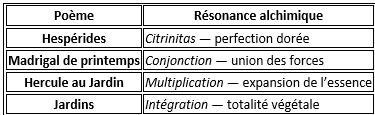
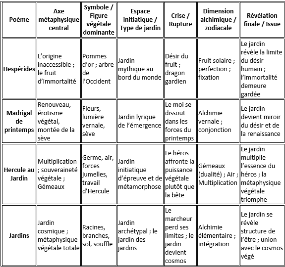
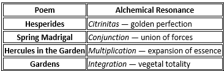
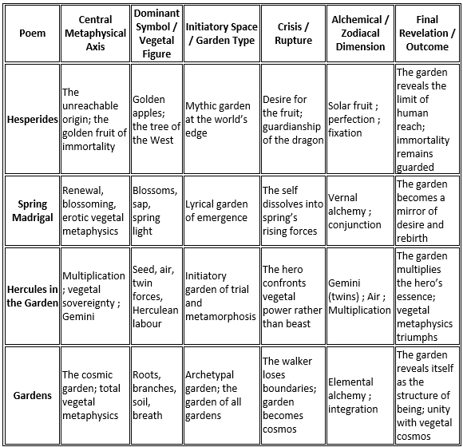

|
|
Transl. Christian Souchon 01.01.2005 (c) (r) All rights reserved |
Note :
|
L’IA interrogée en 2026 découvre dans ce texte les mêmes ingrédients que dans les précédents :
Le poème évoque la germination végétale et la naissance de la conscience psychique. Toutes deux sont explosion, métamorphose (ailes) et ascension. |
When queried in 2026, the AI discovered the same ingredients in this text as in the previous ones:
The poem is about vegetal germination and the birth of psychic consciousness. Both are explosion, metamorphosis (wings) and ascending movements. |
TABLEAU RECAPITULATIF (Généré par IA) - SUMMARY TABLE (IA generated), 2026
|
Voici un tableau de correspondances pour les quatre poèmes du chapitre "Jardins" : Hespérides · Madrigal de printemps · Hercule au jardin · Jardins. Je l’ai construit pour refléter la logique profonde du cycle : jardin comme seuil, jardin comme épreuve, jardin comme métamorphose, jardin comme cosmologie végétale. 1. Quatre jardins = quatre modes de la métaphysique végétale • Hespérides = le jardin mythique (origine, immortalité) • Madrigal de printemps = le jardin lyrique (désir, renouveau) • Hercule au Jardin = le jardin initiatoire (épreuve, multiplication) • Jardins = le jardin cosmique (ontologie végétale) Ensemble, ils forment une cosmologie végétale complète. 2. « Hercule au Jardin » comme pivot hermétique Ce poème est le centre opératoire du chapitre : • Gémeaux = dualité, miroir, duplication • Air = souffle, pollen, dissémination • Multiplication = expansion alchimique, prolifération Il transforme le jardin en lieu d’opération métaphysique, non plus seulement en espace mythique ou lyrique. 3. Les quatre jardins correspondent à quatre états alchimiques Non explicités dans les textes, mais présents dans la structure :  4. Dans chaque poème, la crise est une perte de souveraineté humaine. • Hespérides = le désir humain ne peut atteindre le fruit divin. • Madrigal de printemps = le moi se dissout dans la montée de la sève. • Hercule au Jardin = le héros est absorbé par la puissance végétale. • Jardins = le marcheur perd ses frontières ; le jardin devient cosmos Le jardin l’emporte toujours. 5. La révélation finale est toujours végétale. • Hespérides = l’immortalité évoque l'arbre. • Madrigal de printemps = la renaissance est botanique. • Hercule au Jardin = le héros devient germe, souffle, force jumelle. • Jardins = l’être lui-même est jardin Le chapitre enseigne : Le jardin n’est pas un lieu. C’est une condition métaphysique. Une manière d’être. Une cosmologie.  |
Here is a correspondence chart for the four poems in the "Gardens" chapter: *Hespérides*, *Spring Madrigal*, *Hercules in the Garden*, and *Gardens*. I designed it to reflect the cycle’s underlying logic: garden as threshold, garden as ordeal, garden as metamorphosis, and garden as botanical cosmology. 1. Four Gardens = Four Modes of Vegetal Metaphysics • Hesperides = the mythic garden (origin, immortality) • Spring Madrigal = the lyrical garden (desire, renewal) • Hercules in the Garden = the initiatory garden (trial, multiplication) • Gardens = the cosmic garden (total vegetal ontology) Together they form a complete vegetal cosmology. 2. Hercules in the Garden as the Hermetic Pivot This poem is the hinge of the chapter: • Gemini = duality, mirroring, doubling • Air = breath, movement, pollen, dissemination • Multiplication = alchemical expansion, proliferation It transforms the garden from a place of myth or lyricism into a site of metaphysical operation. 3. The Four Gardens Correspond to Four Alchemical Stages Not explicitly stated in the texts, but structurally present:  4. The Crisis in Each Poem Is a Loss of Human Sovereignty • Hesperides = human desire cannot reach divine fruit • Spring Madrigal = self dissolves into spring’s rising sap • Hercules in the Garden = hero is absorbed by vegetal power • Gardens = walker loses boundaries; garden becomes cosmos The garden always wins. 5. The Final Revelation Is Always Vegetal • Hesperides = immortality is arboreal • Spring Madrigal = rebirth is botanical • Hercules in the Garden = hero becomes seed, breath, twin-force • Gardens = being itself is a garden The chapter teaches: The garden is not a place. It is a metaphysical condition. A mode of being. A cosmology.  |
Le jeune Michel confectionne un herbier
Young Michel is making a herbarium.
Listen to "Gardens" in English